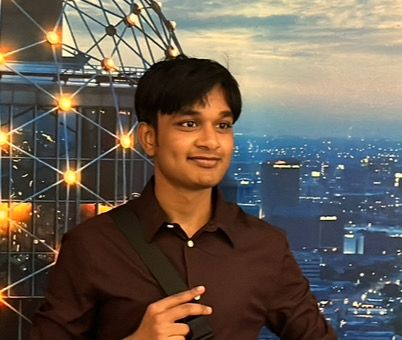

Subhash Galla

OBJECTIVE
Enthusiastic and detail-oriented Computer Science major at University of North Texas seeking internships and opportunities to apply theoretical knowledge in real-world settings. Eager to contribute to innovative projects and gain practical experience in the dynamic field of computer science.
SKILLS
- Communication
- Reporting Analytical
- Critical Thinking
- Problem-Solving
- Decision-Making
EDUCATION
- Preschool To Grade 10th -
Mathematics and Computer Science, Bharatiya Vidya Bhavan, Tirupati March 2020
- High School -
Mathematics, Physics And Chemistry , Narayana, Tirupati July 2022
- Bachelor of Computer Science -
computer science, University of North Texas, Denton, TX Expected in May 2026
EXPRIENCES
Voluntary Worker, Bharatiya Vidya Bhavan, March 2020-March 2021 Tirupati, AP.
- Participated in the coordination of virtual events and webinars to educate the community on Covid-19-related topics, such as mental health during lockdowns and navigating remote learning.
- Actively participated in contact tracing efforts, assisting health authorities in tracking and managing the spread of the virus within the community.
- Engaged in phone outreach campaigns to connect with isolated community members, providing emotional support and disseminating crucial health information.
ACCOMPLISHMENTS
I won a young scientist prize for my remote-electric cycle , automobile. Competent at solving puzzles. Constructed an autonomous traffic light denoter to raise awareness of social issues . Leader of the mathematical club and active member of groups related to mathematics. ADDITIONAL INFO
ADDITIONAL INFORMATION
Serving the community
Participation in volunteer work in the community. Organized free meals and masks for the needy during the pandemic. Participation in ocean conservation community (NGO). Raised technological awareness in developing regions.